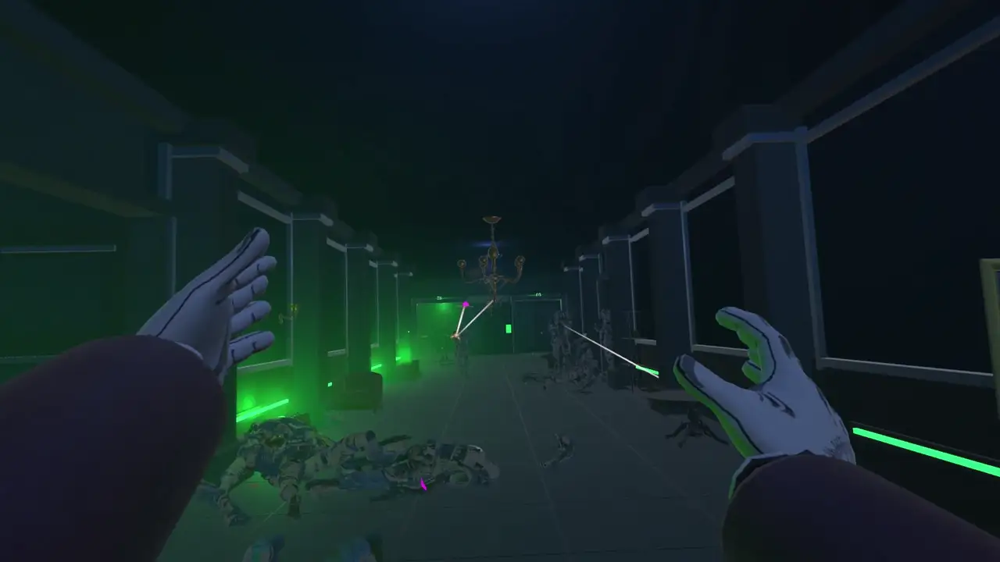
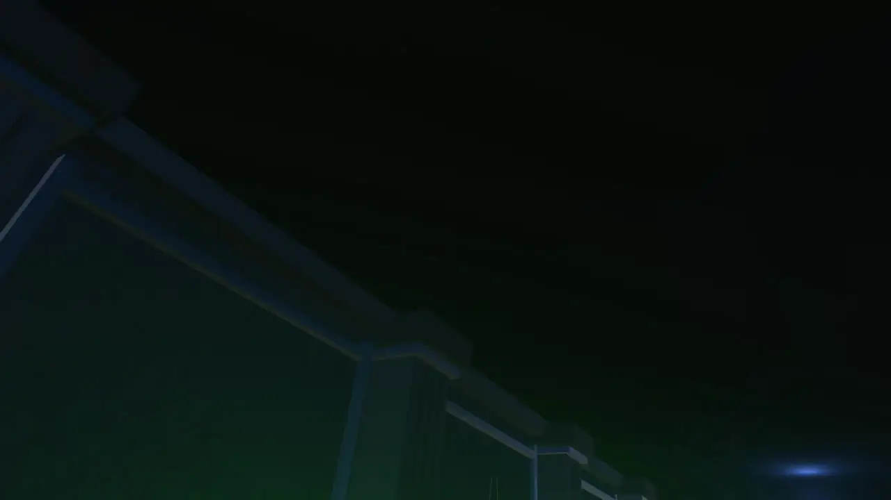
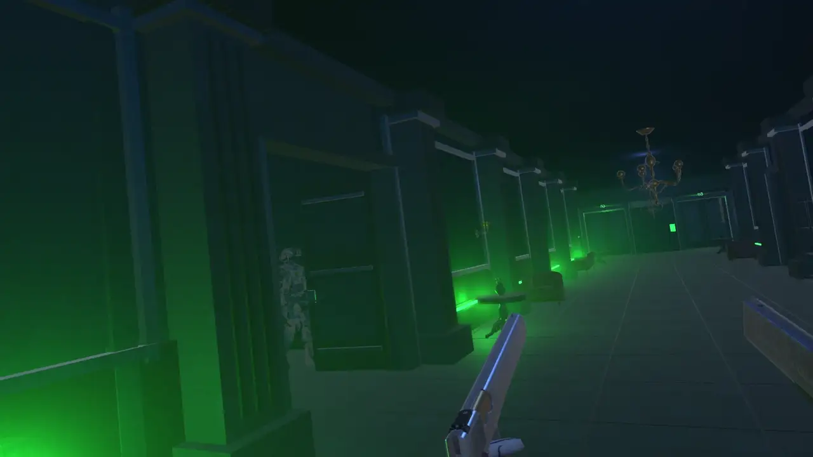
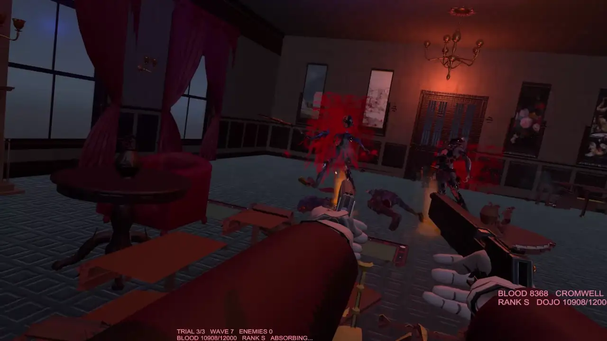

CASULL & JACKAL
Fight with Alucard's iconic pistols, aiming independently in VR. The weapons are designed to materialize in your hands with visual effects.
CORE COMBAT / PROTOTYPES.A. TV / VR ARCADE LAB / EXPERIMENT 001
Step into a supernatural VR shooter inspired by Hellsing. Fight through enemy waves with Casull and Jackal, unleash Alucard's powers, and move from room to room in a gothic combat playground.
S.A. TV / REAL GAMEPLAY
Real prototype footage. Room-scale combat, dual pistols and supernatural encounters. The recording has been stabilized and compressed for streaming.
ORIGINAL 1080P QUALITY · 30 FPS · AAC AUDIO
The footage illustrates the current prototype. Enemy behavior, room transitions, visual effects and several powers are still being developed; this is not a finished or released game.
S.A. TV / SYSTEM BREAKDOWN
Fight with Alucard's iconic pistols, aiming independently in VR. The weapons are designed to materialize in your hands with visual effects.
CORE COMBAT / PROTOTYPE
Clear enemy waves inside connected rooms. The intended flow is to unlock the next doorway after surviving an encounter, without relying on teleporting.
ROOM FLOW / IN DEVELOPMENT
Summon a monstrous familiar from Alucard's arm through a hand gesture. Its intended attacks include biting, grabbing and devouring weakened enemies.
POWER SYSTEM / IN DEVELOPMENT
An inverted-cross gesture is planned to unleash a swarm of bats as an area attack. Hand signs are part of the supernatural VR control language.
GESTURE POWER / IN DEVELOPMENT
Blood is designed to work as a combat resource, not just a visual effect. Absorbing pools of blood would replenish power and encourage aggressive, skillful play.
SCORING / IN DEVELOPMENT
Victorian environments, enemy dismemberment, debris and persistent blood effects are part of the intended arcade spectacle. Destruction and AI are still being refined.
ENVIRONMENT / IN DEVELOPMENTS.A. TV / MORE REAL GAMEPLAY

Real VR firefight captured in the hotel, presented as a short looping scene.

A glimpse at the prototype's arcade score and results display.
More gameplay broadcasts and playtest news as development continues.
Unofficial fan-made development prototype. Hellsing and related characters belong to their respective rights holders. This page does not claim official affiliation or commercial availability.